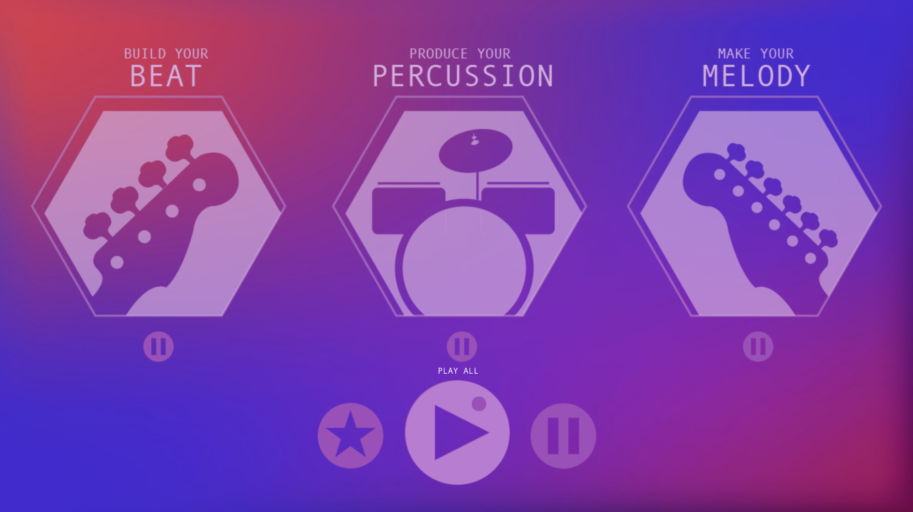
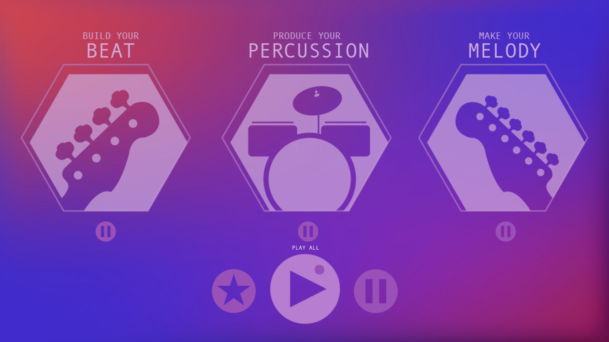

My Music Maker was inspired by my frustration with complicated music creation systems. I wanted to
create an application that would be easy and intuitive for anyone to use. With this tablet app, people can
make simple songs easily.
This is a coding project done using the javascript library p5js. It is an app that enables anyone to
create music very easily. There are three types of sounds: beats, percussion, and melody. Begin
building your song by clicking on an instrument, then use your keyboard or click on the screen to add notes
and chords.
 
